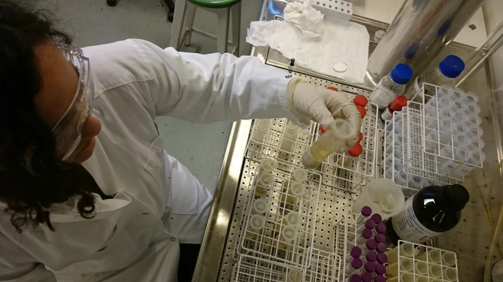
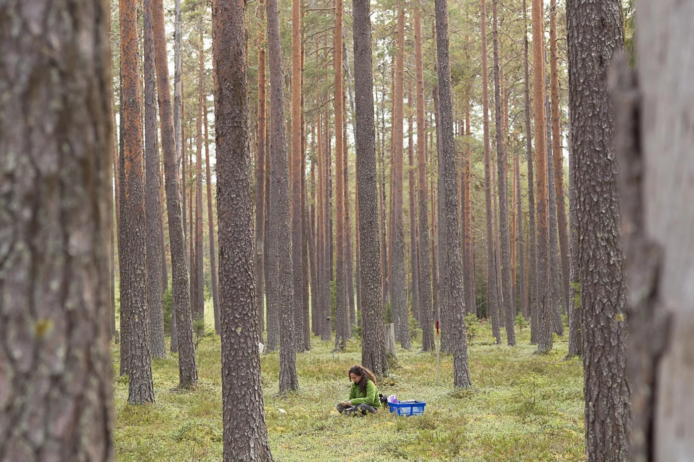

The Soil is the Limit: Dr. Nadia Maaroufi, Soil Ecologist

Dr. Nadia Maaroufi is a soil ecologist at the University of Bern and the Swedish University of Agricultural Sciences. Her research focuses on how global change drivers affect ecosystem functioning, particularly the interactions between above- and below- ground organisms. She wants the public to know that there are more organisms in one teaspoon of soil than there are humans on Earth. These include bacteria, fungi, microbes, microscopic insects, nematodes, and many other small creatures that live in the soil. Their interactions influence overall soil health, which affects everything from agriculture to carbon storage.
“The soil is like a black box,” says Dr. Maaroufi. While it is dark and hard to see inside, “it’s also like a toolbox: if we open it, there are different tools that help the soil to stay healthy.” She seeks to understand what organisms live in the soil, how they interact, and how they help above-ground organisms, like plants, to survive. She also studies how human disturbances affect soil organisms and their functioning. For example, using fertilizers and fossil fuels increases the amount of nitrogen in soils, which changes how much carbon they can store.
Dr. Maaroufi setting up an experimental plot in a boreal forest in northern Sweden. Photo by Mehdi Maaroufi.
Dr. Maaroufi has been fascinated by the natural world since she was a child. Growing up in France, she often visited La Combe du Lac in the French Jura with her family. To her, the peatland there was “like magic,” with carnivorous plants, dragonflies, frogs, and countless other animals and plants to discover. She was happy and proud to share La Combe du Lac with her classmates on school excursions. In a sense, it was her first field area. During her studies, her lifelong fascination with plants led her to an intriguing knowledge gap. She realized that “there is still a lot to discover about what’s going on in the soil,” not only about soil organisms, but also “how they contribute to nutrient cycling and ecosystem functioning.”

Dr. Maaroufi extracting DNA from soil samples in her laboratory. Photo by Benjamin Forsmark.
Opening the soil “black box” requires a broad range of tools, from shovels to centrifuges, and skills, from field sampling to DNA sequencing. Collecting soil cores in the field and analyzing them in the lab requires a high level of accuracy. While Dr. Maaroufi is meticulous, she also enjoys the variety and multidisciplinarity of soil ecology. “I follow the seasons,” she says. “When it’s summer, I’m in the field; in autumn, I’m doing lab work.” Field season is her favorite: she loves seeing moose and other wildlife while working alone in the middle of a forest. She also relishes the chance to pick wild berries and mushrooms.
Dr. Maaroufi is a professor as well as a researcher, and cites sharing her passion with students as another rewarding aspect of her work. While assisting her, her students learn both the “how” and the “why” of soil ecology: she always takes the time to clarify the importance and applications of their research.
Dr. Maaroufi relies on hard-won experience in her work with students. While she was still a student herself, she learned firsthand that conflict can accompany scientific collaboration. She resolved the issue calmly and independently, and credits her PhD advisor for giving her the freedom to make her own decisions.
In addition to fostering her independence, Dr. Maaroufi’s PhD advisor gave her plenty of positive feedback. This helped her gain confidence, as did having strong female role models. During her first postdoctoral fellowship, supportive mentors helped her avoid excessive humility and continue to assert herself as an expert. She learned to make a “niche” for herself—a fitting metaphor for an ecologist—building the resilience to adapt to different surroundings. She has thrived in France, Belgium, Sweden, and Switzerland so far. Where will she go next? For Dr. Maaroufi, the soil is the limit.

Dr. Maaroufi collecting soil samples in a boreal forest in northern Sweden. Photo by Benjamin Forsmark. *Thank you to Dr. Nadia Maaroufi for sharing her story with 500WS Bern-Fribourg. Click here to find out more about her experience. Gabrielle Vance M.Sc. Geology
From the 500 Women Scientists Bern-Fribourg archive. Originally published 3 August 2020.
Explore more stories